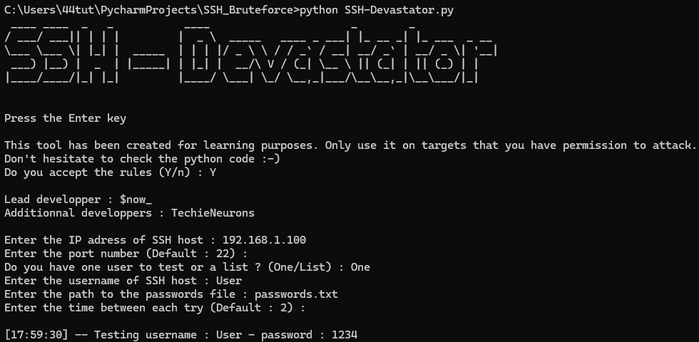
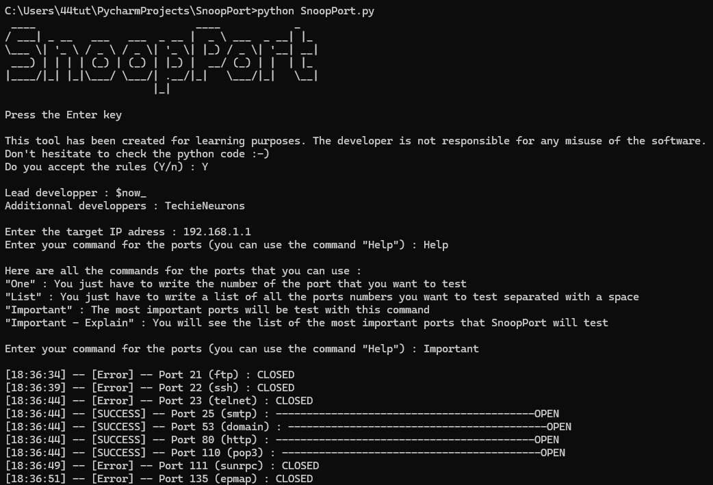
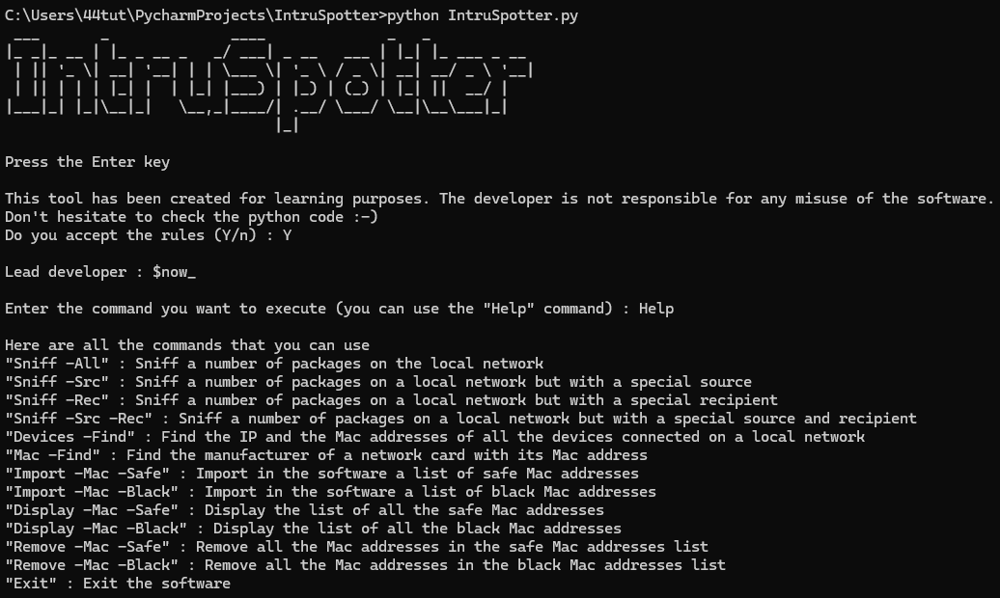
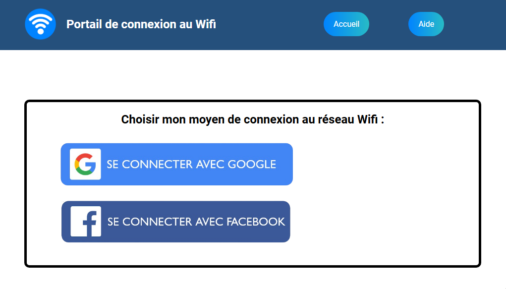

Mes projets sécurité :
SSH-Devastator : Programme de bruteforce de mots de passe SSH

SSH-Devastator est un programme qui permet de casser des mots de passe SSH par la voie du bruteforce. Il prends en charge Un nom d'utilisateur unique ou une liste entière. De même pour les mots de passe.
Le programme sait réagir en cas de refus de l'hôte SSH après un certain nombre d'essais incorrects. Il s'arrête et reprends après un certain temps.
Il est également possible de configurer un port personnalisé.
Langage utilisé : Python
Nombre de lignes de code : 182
État du projet : Actuellement terminé ✅ -- Version 1.1.1
Lien du projet : SSH-Devastator - Dossier GitHub
Le programme sait réagir en cas de refus de l'hôte SSH après un certain nombre d'essais incorrects. Il s'arrête et reprends après un certain temps.
Il est également possible de configurer un port personnalisé.
SnoopPort : Programme de scanner de ports

SnoopPort est un scanner de ports très simple. On lui donne l'adresse IPv4 d'une cible et le programme demande si l'on souhaite tester une liste de ports, un port unique ou bien la liste des ports les plus importants prédéfinis par le programme.
Ce dernier donne ensuite à la fin, un récapitulatif des ports ouverts
Langage utilisé : Python
Nombre de lignes de code : 207
État du projet : Actuellement terminé ✅ -- Version 1.0.1
Lien du projet : SnoopPort - Dossier GitHub
Ce dernier donne ensuite à la fin, un récapitulatif des ports ouverts
IntruSpotter : IDS (Intrusion Detection System) basique

IntruSpotter est un programme qui analyse un réseau, plus particulièrement les paquets Wifi, à la recherche d'intrus.
Il est alors possible d'importer au format .txt une liste d'adresses Mac "bannies" pour qu'une alerte soit envoyée sur le bureau lorsque cette adresse Mac est détectée. Cette option est très utile si le logiciel doit être déployé 24/7.
Il est possible de faire de même avec une liste d'adresses Mac sûres qui, elles, seront ignorées par le programme.
Si le programme ne peut pas être déployé 24/7, il y a possibilité de faire une analyse en une fois des adresses MAC et IPv4 connectées au réseau.
Et afin d'identifier un appareil, le programme dispose d'une option pour afficher le constructeur de la carte réseau de celui-ci en fonction de son adresse Mac.
Langage utilisé : Python
Nombre de lignes de code : 853
État du projet : Actuellement terminé ✅ -- Version 1.0
Lien du projet : IntruSpotter - Dossier GitHub
Il est alors possible d'importer au format .txt une liste d'adresses Mac "bannies" pour qu'une alerte soit envoyée sur le bureau lorsque cette adresse Mac est détectée. Cette option est très utile si le logiciel doit être déployé 24/7.
Il est possible de faire de même avec une liste d'adresses Mac sûres qui, elles, seront ignorées par le programme.
Si le programme ne peut pas être déployé 24/7, il y a possibilité de faire une analyse en une fois des adresses MAC et IPv4 connectées au réseau.
Et afin d'identifier un appareil, le programme dispose d'une option pour afficher le constructeur de la carte réseau de celui-ci en fonction de son adresse Mac.
Wi-Fi Capture - Un projet d'ingénierie sociale pour l'obtention de mots de passe Google et Facebook

Ceci est un projet qui comprends de l'utilisation de logiciels de sécurité ainsi que de la programmation Web.
Le but de ce projet est de créer un faux point d'accès Wi-Fi qui redirige les utilisateurs vers une page de connexion qui ressemble à celles que l'ont peut retrouver dans un lieu public. Une fois les identifiants entrés, ils sont stockés dans un fichier texte.
Outils et langages utilisé : RaspAP pour faire un point d'accès Wi-Fi / Nodogsplash pour la configuration d'un capture portal / HTML/CSS (et un peu de PHP) pour l'affichage du site et la gestion des entrées utilisateurs
État du projet : Actuellement en cours ▶️
Le but de ce projet est de créer un faux point d'accès Wi-Fi qui redirige les utilisateurs vers une page de connexion qui ressemble à celles que l'ont peut retrouver dans un lieu public. Une fois les identifiants entrés, ils sont stockés dans un fichier texte.